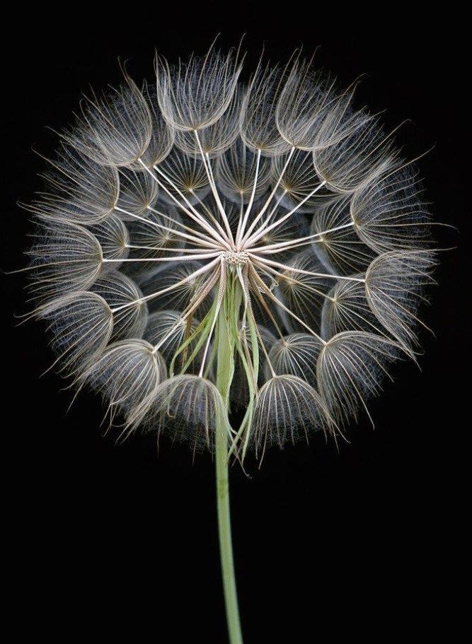
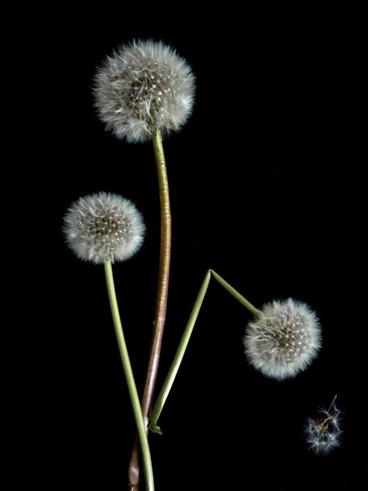
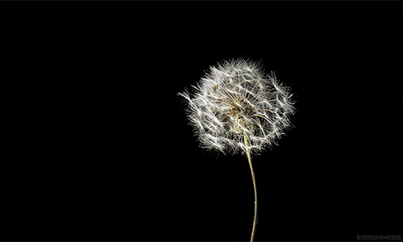

Traxacum officinale (aka.Dandelions) are often seen as simple weeds, but they hold a special place in nature's heart. With their vibrant yellow petals, they bloom brightly in the spring, transforming fields and gardens into golden seas. As they mature, the delicate puffballs are a symbol of both fragility and resilience. Each tiny seed carried by the wind represents a wish, a dream, or a new beginning. When you blow on a dandelion, it’s not just a playful moment—it’s a reminder of nature's quiet persistence, its ability to thrive in even the most unlikely places. Whether they’re dotting the landscape or making their way into a child’s hands, dandelions remind us to embrace the beauty in the simple things and to find joy in life’s fleeting moments. They symbolize hope, freedom, and the power of transformation.

